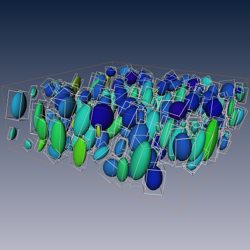

Visualization of the result of
ShapeAnalysis
. Ellipsoidal approximation of the labeled regions visualized with
TensorDisplay
. Bounding boxes aligned with the main axes of the ellipsoids depict the spatial extent of each region.